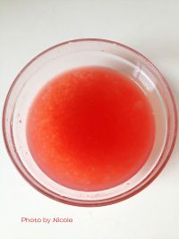

<style>
/* custom */
section[data-id="8"] {
    /*background-color: #3498db;*/
}
section[data-id="8"] .box1 {
    left: 84px; top: 48px;
}
section[data-id="8"] .box2 {
    left: 19px; top: 351px;
}
section[data-id="8"] .box3 {
    left: 25px; top: 420px;
}
section[data-id="8"] .box3 p {
    width: 224px;
}
</style>

<!-- 第八屏 -->
<voice-pig id="voice-8" text="part8:放入冰箱冷藏，浸泡15分钟以上，表面装饰水果就可以吃了" onStop="playFinish()"></voice-pig>
<section class="page">
    <div class="box1 animated bounceInDown">
        
    </div>
    <div class="box2 animated fadeInRight">
        <i>8</i>
    </div>
    <div class="box3 animated fadeInLeft">
        <p>放入冰箱冷藏，浸泡15分钟以上，表面装饰水果就可以吃了</p>
    </div>
</section>
<voice-pig id="voice-finish" text="一碗好吃的西瓜西米露就这样做好了，哈哈哈"></voice-pig>

